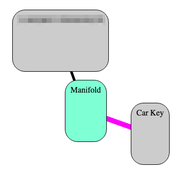
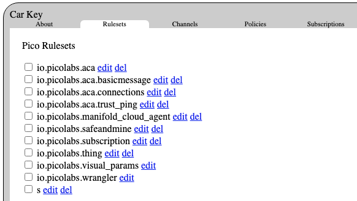

When you created a Manifold account and then a thing for your "Car Key" these picos were created for you:
The first one is an "owner" pico representing your account with Manifold. It has a direct child pico named "Manifold" which itself has a direct child named "Car Key" (which is also in a manifold-thing to manifold-pico relationship with its parent (the magenta line)). The first two were created when you signed in with your Google ID. The Car Key pico was created when you clicked on the "+ Add Thing" button and supplied the name.
The behavior and state of a pico depend on which rulesets are installed in it. The Car Key pico has these rulesets installed (shown by the admin UI in alpahabetic order):

Each ruleset contributes to the state and the behavior of your Car Key pico. They are listed again below in the order they were installed. The first three are installed as a pico is created. Then the Manifold web app installs the thing ruleset, along with a ruleset for the default app, Safe and Mine. Then, later, on my suggestion, you installed the Manifold cloud agent app, and it installed the io.picolabs.aca ruleset making your pico an Aries agent, along with everything else it already was. A bit later you clicked on the Allow Connections button, which installed the remaining rulesets.
io.picolabs.wranglerio.picolabs.visual_paramsio.picolabs.subscriptionio.picolabs.thingio.picolabs.safeandmineio.picolabs.manifold_cloud_agentio.picolabs.acaio.picolabs.aca.connectionsio.picolabs.aca.basicmessageio.picolabs.aca.trust_pings
Then as you made connections to other Aries agents, these were stored in an entity variable of the io.picolabs.aca ruleset. This is what your connection to me looks like inside of your pico:
{
"created": "2021-06-17T15:53:48.076Z",
"label": "Bruce at IIW32",
"my_did": "LxMsqE4D...Sm2wCsnUR",
"their_did": "vM9Hmmja...CBhB4cuq",
"their_vk": "G56xP1biV6NyFFDAoZgESjo2GMVw8fQRSMxoHSFasbjG",
"their_endpoint": "https://manifold.picolabs.io:9090/sky/event/vM9Hmmja...CBhB4cuq/null/didcomm/message",
"their_routing": []
}
and this is what my end looks like:
{
"label": "Car Key",
"my_did": "vM9Hmmja...CBhB4cuq",
"their_vk": "Aw1V5DLDdSiEUGybx96KsVrK9DeUHsjZR9R4nEJqHFWx",
"their_routing": [],
"created": "2021-06-17T15:53:48.108Z",
"their_did": "LxMsqE4D...Sm2wCsnUR",
"their_endpoint": "https://manifold.picolabs.io:9090/sky/event/LxMsqE4D...Sm2wCsnUR/null/didcomm/message"
}
Comparing these, you can see that each of us have a DID to the other. These DIDs appear as part of the address in the endpoints, which are events sent to the pico on the other end of the connection. These maps are stored in entity variables controlled by the io.picolabs.aca ruleset in our respective thing picos. As an admin, I can see entity variables.
A connection map is part of what you would expect to see in a wallet. You have my public key in your connection, and I have yours in my end (labelled "their_vk"). The keys are maintained internally by the pico engine associated with the corresponding DIDs. There is no way to see the private keys, even by myself as a system administrator.
The wallet is maintained by the pico engine, with connections visible to a system admin. Each connection contains a DID ("my_did") which has an associated key pair. The public key is easily available to the coder of rulesets, but the private key is only available to crypto primitives running inside of the pico engine.